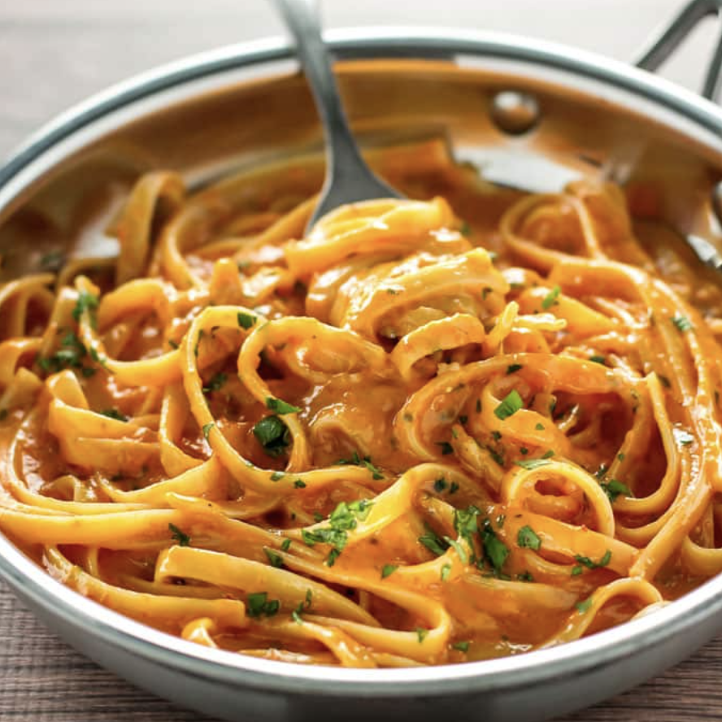

Red Rosemary Fettuccine Alfredo

This elegant pasta dish will have you dreaming of Grandma's kitchen. Perfectly tart tomato sauce tempered with rich and creamy alfredo sauce and a hint of Rosemary stewed in and poured over perfect Al Dente fettuccine pasta. Easy, yet sophisticated. Perfect for Monday night or Date Night."
Ingredients:
- 1 Box Organic Fettuccine Pasta
- 1 Jar Alfredo Sauce
- 1 Jar Tomato Sauce
- 1 Rosemary Stalk
- Cayenne Pepper
- Salt & Pepper
Steps:
- Start by cooking and straining your pasta, following the directions on the box to get the perfect Al Dente texture.
- Add your tomato and alfredo sauce to a small pot and set to medium heat. Mix thoroughly.
- Add your rosemary stalk whole and bring your sauce mixture up to a boil.
- Once at a boil, remove your pot from heat and gently scoop out your rosemary stalk and any leaves it left behind. Discard.
- Pour the sauce over a perfectly-made bed of fettuccine and enjoy with your favorite glass of red wine.
- You could further spice up this recipe by adding chicken, etc, but this is the original recipe I made for my wife on our first date while in college and for history's sake, we're keeping it OG 😎